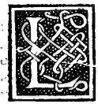

CAPITOLO X¶
Sequela del primo proposto effecto.

Lequali cose ben notate al suo primo proposto effecto faciam regressso. E quello con euidenti exempli rendiam chiaro e a sua delucidatione reprehendase el medesimo caso de io inquel luogo aducto. senza più trauagliarse in altre laboriose quantità chel medesimo sempre in cadauna aduiene che in questo se dici. E per via de Arithmetica a più piena notitia de vostra celsitudine li altri tutti andaremo sequilando presuponendo tutta via le scientifiche prone de quel tutto chel nostro processo contirra nelli luoghi che aduremo dal nostro philosopho Euclide essere con ogni solertia Geometrice asegnate secondo la oportuna exigentia dele conclusioni.
Dico adonca che io. diuiso: secondo la nostra proportione e la magior sua parte fia R. i25. m. 5 sopra laquale per dicto effecto posto 5. cioè la mita de tutto IO. farà R. i25 aponto. Pero che quel m. 5 se vene a restorare e arempire con più 5 mita de io. Questo congionto cioè R. 125. in se multiplicato che fa i25 per lo suo quadrato fia 5 tanto del quadrato dela mita de io. che e 5. el suo quadrato 25.
Onde i25. fia aponto quincuplo al dicto 25. quadrato de dieta mita de io commo fo dicto. E questo effecto ha luogo. in ogni quantità de che natura sia commo aperto demostra la prima del 13. de nostra guida.